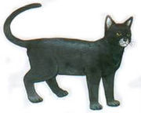
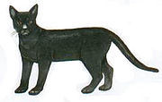
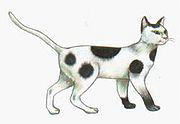
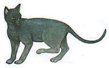
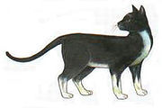

๑.กรอบแว่น
มีขนสีขาวทั้งตัว ส่วนขอบตาและกลางแผ่นหลังมีสีดำ คล้ายกรอบแว่นตาและอานม้าตามลำดับ

๒.กระรอก
มีขนสีดำมันทั้งตัว ตาสีเหลือง รอบปากมีสีขาว

๓.การเวก
ขนมีสีดำทั้งตัว ปลายจมูกมีสีขาว สีเหลืองอำพัน

๔.เก้าแต้ม
ขนมีสีขาวทั้งตัว มีจุดสีดำรอบตัวเก้าแห่ง คือ หัว คอ โคนขาหน้าและหลังทั้งสี่ ไหล่ทั้งสอง และโคนหาง

๕.โกนจา, โกญจา, ร่องมด, ดำปลอด
ขนสั้นเรียบละเอียดสีดำสนิททั้งตัวนัยน์ตาสีเหลืองอมเขียว ปากเรียว หูตั้ง

๖.จตุบท
มีสีดำ นอกจากปลายเท้าขึ้นมาจนถึงข้อพับทั้งสี่ข้างเป็นสีขาว นัยน์ตาเป็นสีเหลือง